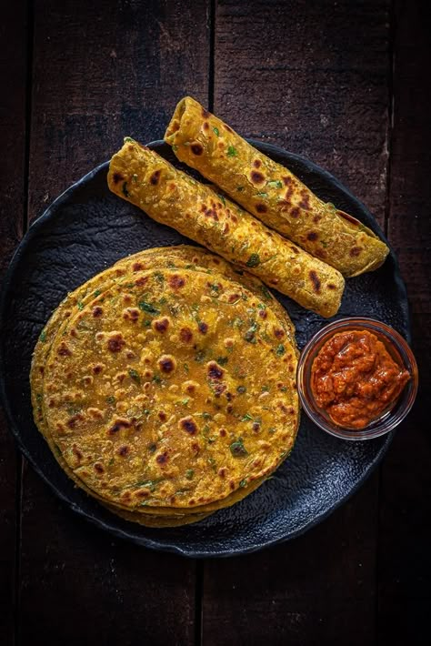

Ingredients
- 2 cups whole wheat flour
- 1 cup chopped fresh fenugreek (methi) leaves
- 1/2 tsp turmeric powder
- 1 tsp red chili powder
- 1 tsp cumin seeds
- 1 tbsp curd (optional)
- Salt to taste
- Water to knead
- Oil for cooking
Instructions
- In a large bowl, mix wheat flour, fenugreek leaves, spices, curd, and salt.
- Add water little by little to make a soft dough. Rest for 10-15 minutes.
- Divide into small balls and roll each into a thin round.
- Heat a tawa and cook each thepla on both sides using a little oil.
- Serve hot with pickle or curd.